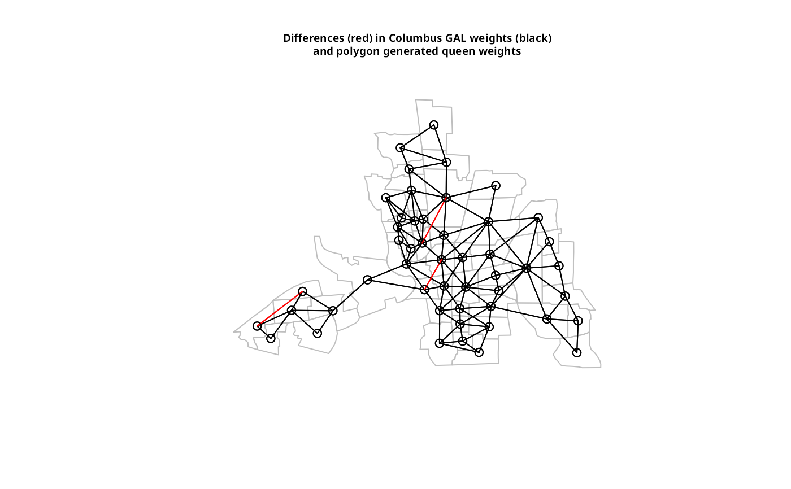
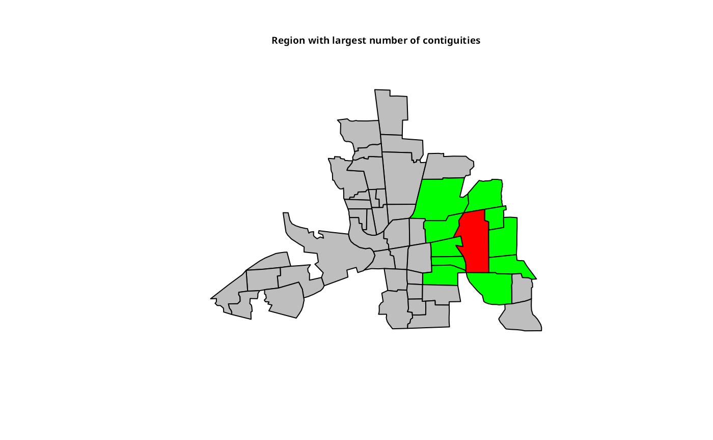
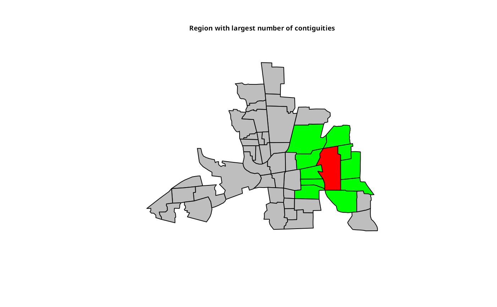

Construct neighbours list from polygon list
poly2nb.RdThe function builds a neighbours list based on regions with contiguous boundaries, that is sharing one or more boundary point. The current function is in part interpreted and may run slowly for many regions or detailed boundaries, but from 0.2-16 should not fail because of lack of memory when single polygons are built of very many border coordinates.
Arguments
- pl
list of polygons of class extending
SpatialPolygons, or ansforsfcobject containing non-empty (multi-)polygon objects- row.names
character vector of region ids to be added to the neighbours list as attribute
region.id, defaultseq(1, nrow(x)); ifplhasrow.names, they are used instead of the default sequence.- snap
boundary points less than
snapdistance apart are considered to indicate contiguity; used both to find candidate and actual neighbours for planar geometries, but only actual neighbours for spherical geometries, as spherical spatial indexing itself injects some fuzzyness. If not set, for allSpatialPolygonsobjects, the default is as beforesqrt(.Machine$double.eps), with this value also used forsfobjects with no coordinate reference system. Forsfobjects with a defined coordinate reference system, the default value is1e-7for geographical coordinates (approximately 10mm), is 10mm where projected coordinates are in metre units, and is converted from 10mm to the same distance in the units of the coordinates. Should the conversion fail,snapreverts tosqrt(.Machine$double.eps).- queen
if TRUE, a single shared boundary point meets the contiguity condition, if FALSE, more than one shared point is required; note that more than one shared boundary point does not necessarily mean a shared boundary line
- useC
default TRUE, doing the work loop in C, may be set to false to revert to R code calling two C functions in an
n*kwork loop, wherekis the average number of candidate neighbours- foundInBox
default NULL using R code or
st_intersects()to generate candidate neighbours (usingsnap=if the geometries are not spherical); if not NULL (for legacy purposes) a list of length(n-1)with integer vectors of candidate neighbours(j > i)(as created by thepoly_findInBoxGEOSfunction in rgeos for clean polygons)
Value
A neighbours list with class nb. See card for details of “nb” objects.
Note
From 0.5-8, the function includes faster bounding box indexing and other improvements contributed by Micah Altman. If a cluster is provided using set.ClusterOption, it will be used for finding candidate bounding box overlaps for exact testing for contiguity.
Until 1.1-7, sf polygons included both start and end points, so could erroneously report queen neighbourhood where only rook was present, see https://github.com/r-spatial/spdep/issues/50.
From 1.1-9 with sf 1.0-0, s2 is used in bounding box indexing internally when pl is in geographical coordinates. Because the topology engine of s2 differs from the use of GEOS for planar coordinates by sf, some output differences may be expected. Since treating spherical geometries as planar is also questionable, it is not clear whether spherical contiguous polygon neighbours should simply follow neighbours found by treating the geometries as planar https://github.com/r-spatial/s2/issues/125#issuecomment-864403372. However, current advice is not necessarily to use s2 for finding contiguity neighbours, or at least to check output.
Author
Roger Bivand Roger.Bivand@nhh.no with contributions from Micah Altman
Examples
columbus <- st_read(system.file("shapes/columbus.gpkg", package="spData")[1], quiet=TRUE)
col.gal.nb <- read.gal(system.file("weights/columbus.gal", package="spData")[1])
coords <- st_coordinates(st_centroid(st_geometry(columbus)))
xx <- poly2nb(as(columbus, "Spatial"))
dxx <- diffnb(xx, col.gal.nb)
#> Warning: neighbour object has 46 sub-graphs
plot(st_geometry(columbus), border="grey")
plot(col.gal.nb, coords, add=TRUE)
plot(dxx, coords, add=TRUE, col="red")
title(main=paste("Differences (red) in Columbus GAL weights (black)",
"and polygon generated queen weights", sep="\n"), cex.main=0.6)

# poly2nb with sf sfc_MULTIPOLYGON objects
sf_xx <- poly2nb(columbus)
diffnb(sf_xx, xx)
#> Warning: neighbour object has 49 sub-graphs
#> Neighbour list object:
#> Number of regions: 49
#> Number of nonzero links: 0
#> Percentage nonzero weights: 0
#> Average number of links: 0
#> 49 regions with no links:
#> 1, 2, 3, 4, 5, 6, 7, 8, 9, 10, 11, 12, 13, 14, 15, 16, 17, 18, 19, 20,
#> 21, 22, 23, 24, 25, 26, 27, 28, 29, 30, 31, 32, 33, 34, 35, 36, 37, 38,
#> 39, 40, 41, 42, 43, 44, 45, 46, 47, 48, 49
#> 49 disjoint connected subgraphs
sfc_xx <- poly2nb(st_geometry(columbus))
diffnb(sfc_xx, xx)
#> Warning: neighbour object has 49 sub-graphs
#> Neighbour list object:
#> Number of regions: 49
#> Number of nonzero links: 0
#> Percentage nonzero weights: 0
#> Average number of links: 0
#> 49 regions with no links:
#> 1, 2, 3, 4, 5, 6, 7, 8, 9, 10, 11, 12, 13, 14, 15, 16, 17, 18, 19, 20,
#> 21, 22, 23, 24, 25, 26, 27, 28, 29, 30, 31, 32, 33, 34, 35, 36, 37, 38,
#> 39, 40, 41, 42, 43, 44, 45, 46, 47, 48, 49
#> 49 disjoint connected subgraphs
xxx <- poly2nb(as(columbus, "Spatial"), queen=FALSE)
dxxx <- diffnb(xxx, col.gal.nb)
#> Warning: neighbour object has 34 sub-graphs
plot(st_geometry(columbus), border = "grey")
plot(col.gal.nb, coords, add = TRUE)
plot(dxxx, coords, add = TRUE, col = "red")
title(main=paste("Differences (red) in Columbus GAL weights (black)",
"and polygon generated rook weights", sep="\n"), cex.main=0.6)
 cards <- card(xx)
maxconts <- which(cards == max(cards))
if(length(maxconts) > 1) maxconts <- maxconts[1]
fg <- rep("grey", length(cards))
fg[maxconts] <- "red"
fg[xx[[maxconts]]] <- "green"
plot(st_geometry(columbus), col=fg)
title(main="Region with largest number of contiguities", cex.main=0.6)

nc.sids <- st_read(system.file("shapes/sids.gpkg", package="spData")[1], quiet=TRUE)
system.time(xxnb <- poly2nb(nc.sids))
#> user system elapsed
#> 0.046 0.000 0.047
system.time(xxnb <- poly2nb(as(nc.sids, "Spatial")))
#> user system elapsed
#> 0.064 0.000 0.065
plot(st_geometry(nc.sids))
plot(xxnb, st_coordinates(st_centroid(nc.sids)), add=TRUE, col="blue")
#> Warning: st_centroid assumes attributes are constant over geometries
cards <- card(xx)
maxconts <- which(cards == max(cards))
if(length(maxconts) > 1) maxconts <- maxconts[1]
fg <- rep("grey", length(cards))
fg[maxconts] <- "red"
fg[xx[[maxconts]]] <- "green"
plot(st_geometry(columbus), col=fg)
title(main="Region with largest number of contiguities", cex.main=0.6)

nc.sids <- st_read(system.file("shapes/sids.gpkg", package="spData")[1], quiet=TRUE)
system.time(xxnb <- poly2nb(nc.sids))
#> user system elapsed
#> 0.046 0.000 0.047
system.time(xxnb <- poly2nb(as(nc.sids, "Spatial")))
#> user system elapsed
#> 0.064 0.000 0.065
plot(st_geometry(nc.sids))
plot(xxnb, st_coordinates(st_centroid(nc.sids)), add=TRUE, col="blue")
#> Warning: st_centroid assumes attributes are constant over geometries
 sq <- st_polygon(list(rbind(c(0,0), c(1,0), c(1,1), c(0,1), c(0,0))))
sq2 <- sq + c(0,1)
sq3 <- sq + c(1,0)
sq4 <- sq + c(1,1)
gm <- st_sfc(list(sq, sq2, sq3, sq4))
df <- st_as_sf(data.frame(gm, id=1:4))
plot(st_geometry(df))
text(st_coordinates(st_centroid(gm)), as.character(df$id))
sq <- st_polygon(list(rbind(c(0,0), c(1,0), c(1,1), c(0,1), c(0,0))))
sq2 <- sq + c(0,1)
sq3 <- sq + c(1,0)
sq4 <- sq + c(1,1)
gm <- st_sfc(list(sq, sq2, sq3, sq4))
df <- st_as_sf(data.frame(gm, id=1:4))
plot(st_geometry(df))
text(st_coordinates(st_centroid(gm)), as.character(df$id))
 unclass(poly2nb(df, queen = FALSE))
#> [[1]]
#> [1] 2 3
#>
#> [[2]]
#> [1] 1 4
#>
#> [[3]]
#> [1] 1 4
#>
#> [[4]]
#> [1] 2 3
#>
#> attr(,"region.id")
#> [1] "1" "2" "3" "4"
#> attr(,"call")
#> poly2nb(pl = df, queen = FALSE)
#> attr(,"type")
#> [1] "rook"
#> attr(,"snap")
#> [1] 1.490116e-08
#> attr(,"sym")
#> [1] TRUE
#> attr(,"ncomp")
#> attr(,"ncomp")$nc
#> [1] 1
#>
#> attr(,"ncomp")$comp.id
#> [1] 1 1 1 1
#>
col_geoms <- st_geometry(columbus)
col_geoms[1] <- st_buffer(col_geoms[1], dist=-0.05)
st_geometry(columbus) <- col_geoms
poly2nb(columbus)
#> Warning: some observations have no neighbours;
#> if this seems unexpected, try increasing the snap argument.
#> Warning: neighbour object has 2 sub-graphs;
#> if this sub-graph count seems unexpected, try increasing the snap argument.
#> Neighbour list object:
#> Number of regions: 49
#> Number of nonzero links: 232
#> Percentage nonzero weights: 9.662641
#> Average number of links: 4.734694
#> 1 region with no links:
#> 1
#> 2 disjoint connected subgraphs
unclass(poly2nb(df, queen = FALSE))
#> [[1]]
#> [1] 2 3
#>
#> [[2]]
#> [1] 1 4
#>
#> [[3]]
#> [1] 1 4
#>
#> [[4]]
#> [1] 2 3
#>
#> attr(,"region.id")
#> [1] "1" "2" "3" "4"
#> attr(,"call")
#> poly2nb(pl = df, queen = FALSE)
#> attr(,"type")
#> [1] "rook"
#> attr(,"snap")
#> [1] 1.490116e-08
#> attr(,"sym")
#> [1] TRUE
#> attr(,"ncomp")
#> attr(,"ncomp")$nc
#> [1] 1
#>
#> attr(,"ncomp")$comp.id
#> [1] 1 1 1 1
#>
col_geoms <- st_geometry(columbus)
col_geoms[1] <- st_buffer(col_geoms[1], dist=-0.05)
st_geometry(columbus) <- col_geoms
poly2nb(columbus)
#> Warning: some observations have no neighbours;
#> if this seems unexpected, try increasing the snap argument.
#> Warning: neighbour object has 2 sub-graphs;
#> if this sub-graph count seems unexpected, try increasing the snap argument.
#> Neighbour list object:
#> Number of regions: 49
#> Number of nonzero links: 232
#> Percentage nonzero weights: 9.662641
#> Average number of links: 4.734694
#> 1 region with no links:
#> 1
#> 2 disjoint connected subgraphs